Caduta sulle scale condominiali: la prova del danno spetta al danneggiato
Chi cade sulle scale del proprio condominio non ottiene automaticamente il risarcimento. Il custode risponde in via oggettiva ai sensi dell'art. 2051 c.c., ma è il danneggiato a do…

Dipendente inidoneo: l'azienda deve creare un nuovo posto?
Quando un lavoratore diventa inidoneo alle mansioni, il licenziamento non è automatico. Prima il datore deve verificare se esistono soluzioni organizzative ragionevoli per conserva…

Malattia per depressione: quando uscire di casa non giustifica il licenziamento
La Cassazione torna sul rapporto tra malattia e controlli datoriali. Un lavoratore in malattia per depressione può svolgere attività esterne, purché non compromettano e anzi favori…

Errori nelle offerte commerciali: quando il licenziamento è legittimo
Sbagliare ripetutamente nella predisposizione di offerte commerciali può costare il posto di lavoro. La giurisprudenza di legittimità ammette il licenziamento quando gli errori, in…

Annunci di lavoro discriminatori: chi può fare causa
La tutela contro le discriminazioni non parte dall'assunzione: scatta già con l'annuncio. Formule come «cercasi under 30» o «no over 40» possono fondare un'azione legale anche prim…

Incentivi assunzioni 2026: come funzionano gli esoneri contributivi INPS
Tornano al centro del dibattito gli incentivi all'occupazione gestiti dall'INPS, basati su esoneri contributivi per le nuove assunzioni. Prima di pianificare il reclutamento sfrutt…
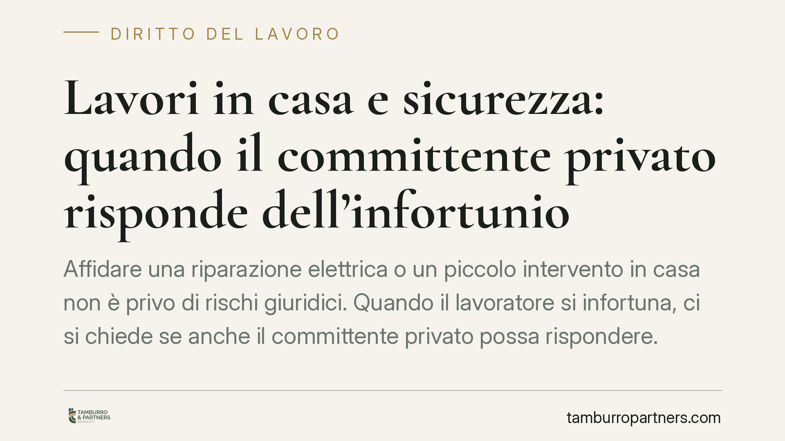
Lavori in casa e sicurezza: quando il committente privato risponde dell'infortunio
Affidare una riparazione elettrica o un piccolo intervento in casa non è privo di rischi giuridici. Quando il lavoratore si infortuna, ci si chiede se anche il committente privato …
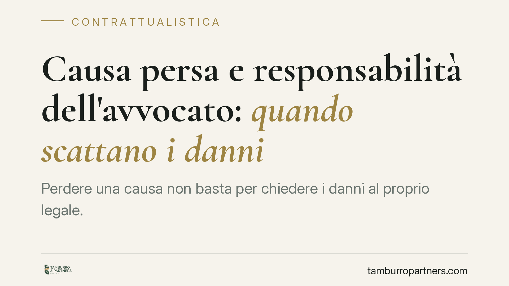
Causa persa e responsabilità dell'avvocato: quando scatta il risarcimento
Perdere una causa non significa, di per sé, che l'avvocato debba risarcire il cliente. La responsabilità del difensore nasce solo se una difesa diligente avrebbe potuto cambiare l'…
Lavoro minorile in Italia: il quadro normativo e cosa rischia chi lo impiega
Il 12 giugno 2026 la Giornata mondiale contro il lavoro minorile riporta al centro un fenomeno che resta attuale anche in Italia. ANMIL collega lo sfruttamento dei minori al divari…
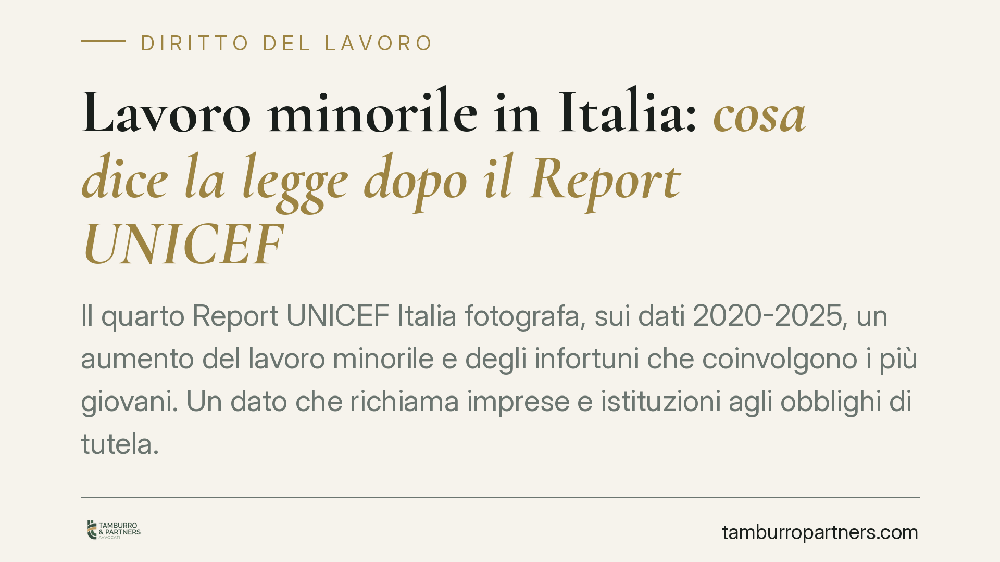
Lavoro minorile in Italia: cosa dice la legge dopo il Report UNICEF
Il quarto Report UNICEF Italia fotografa, sui dati 2020-2025, un aumento del lavoro minorile e degli infortuni che coinvolgono i più giovani. Un dato che richiama imprese e istituz…
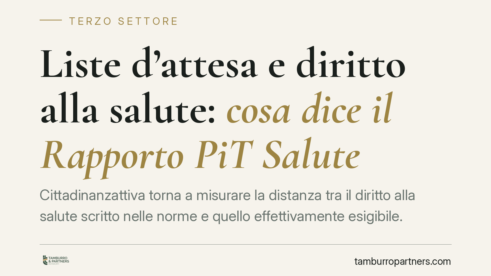
Liste d'attesa e diritto alla salute: cosa dice il Rapporto PiT Salute
Cittadinanzattiva torna a misurare la distanza tra il diritto alla salute scritto nelle norme e quello effettivamente esigibile. Tra liste d'attesa, nomenclatore aggiornato e nuove…
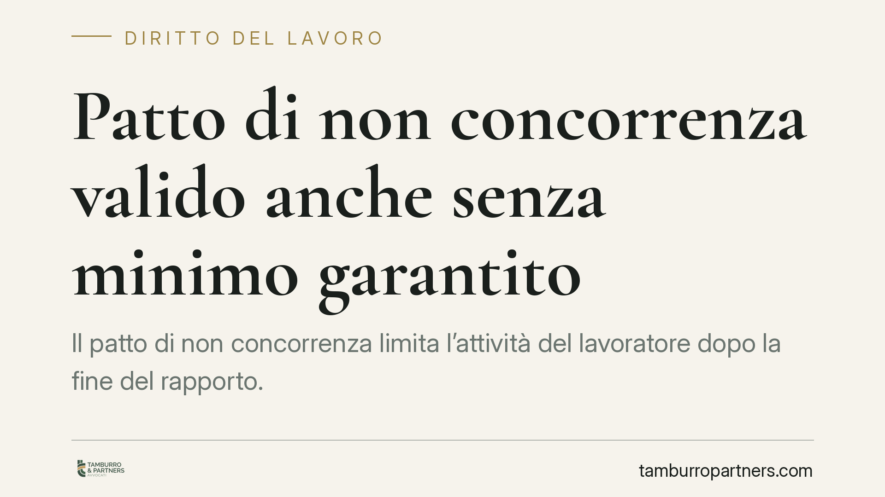
Patto di non concorrenza valido anche senza minimo garantito
Il patto di non concorrenza limita l'attività del lavoratore dopo la fine del rapporto. La Cassazione chiarisce che resta valido anche in assenza di un minimo garantito, purché il …
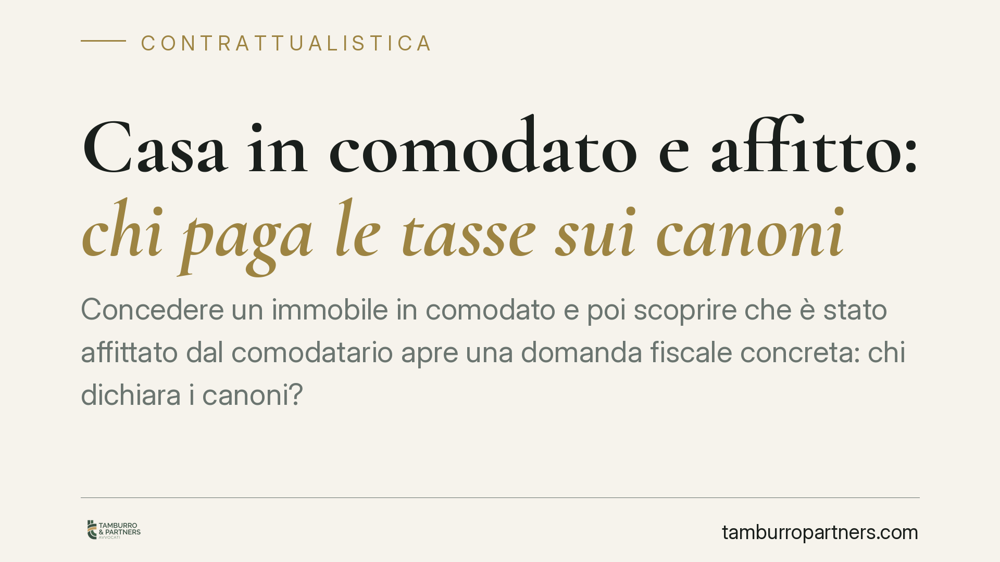
Casa in comodato e affitto a terzi: chi paga le tasse sui canoni
Un immobile concesso in comodato e poi affittato dal comodatario solleva una domanda ricorrente: chi dichiara il reddito al Fisco? Il nodo ruota attorno alla distinzione tra posses…
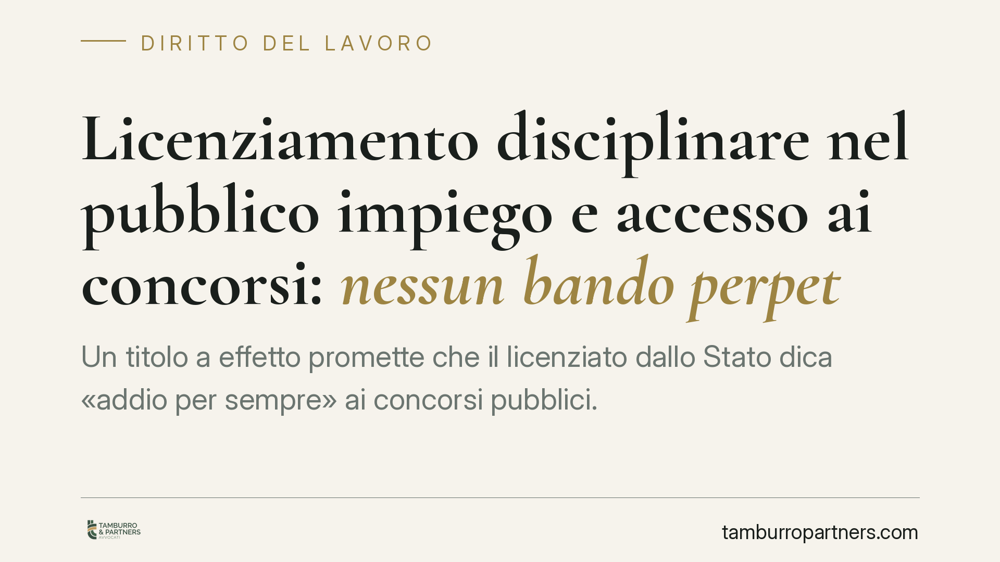
Licenziamento disciplinare nel pubblico impiego e accesso ai concorsi: nessun bando perpetuo
Un titolo a effetto promette che il licenziato dallo Stato dica «addio per sempre» ai concorsi pubblici. La realtà giuridica è più articolata: il licenziamento disciplinare può pre…
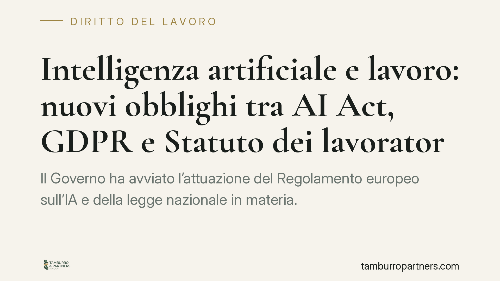
Intelligenza artificiale e lavoro: nuovi obblighi tra AI Act, GDPR e Statuto dei lavoratori
Il Governo ha avviato l'attuazione del Regolamento europeo sull'IA e della legge nazionale in materia. Per i datori di lavoro si profilano nuovi obblighi su sicurezza, trasparenza …
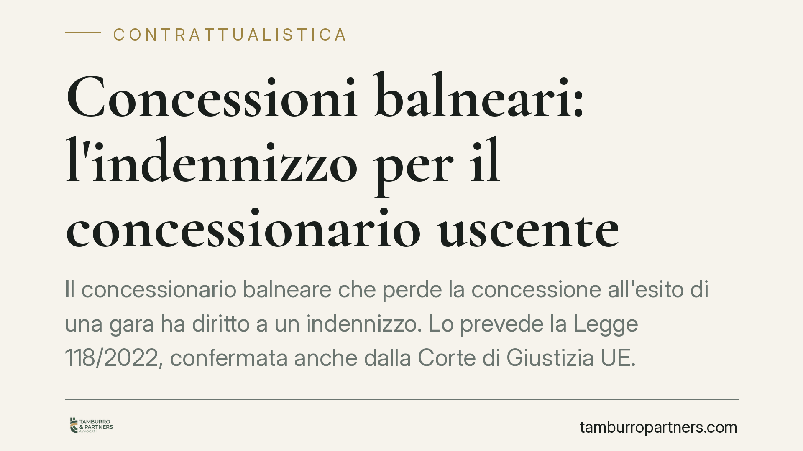
Concessioni balneari: l'indennizzo per il concessionario uscente
Il concessionario balneare che perde la concessione all'esito di una gara ha diritto a un indennizzo. Lo prevede la Legge 118/2022, confermata anche dalla Corte di Giustizia UE. Ma…
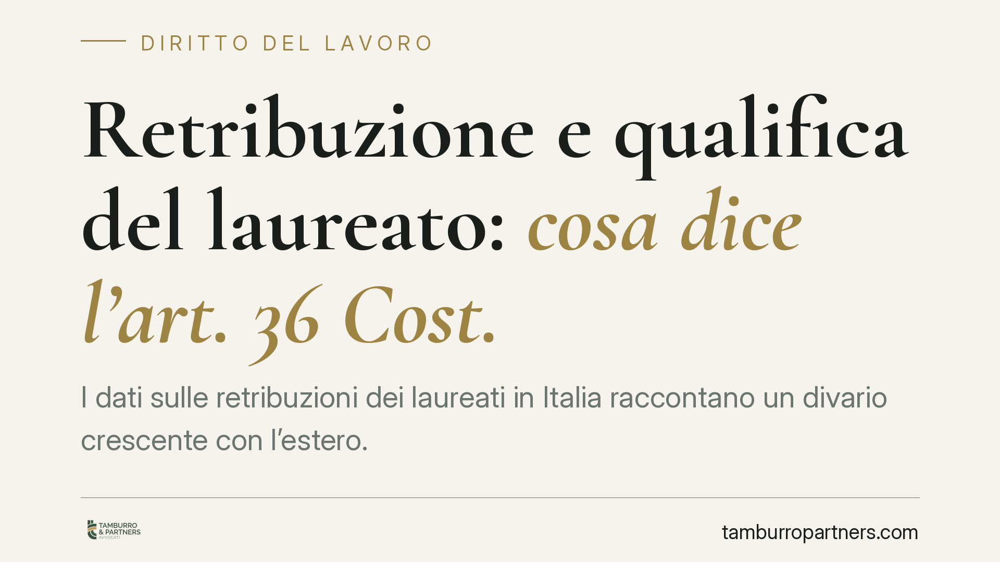
Retribuzione e qualifica del laureato: cosa dice l'art. 36 Cost.
I dati sulle retribuzioni dei laureati in Italia raccontano un divario crescente con l'estero. Il tema non è solo economico: tocca un principio costituzionale preciso, quello della…
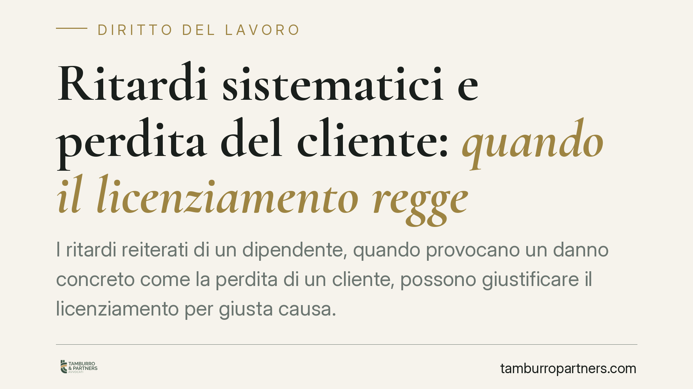
Ritardi sistematici e perdita del cliente: quando il licenziamento regge
I ritardi reiterati di un dipendente, quando provocano un danno concreto come la perdita di un cliente, possono giustificare il licenziamento per giusta causa. È quanto emerge da u…
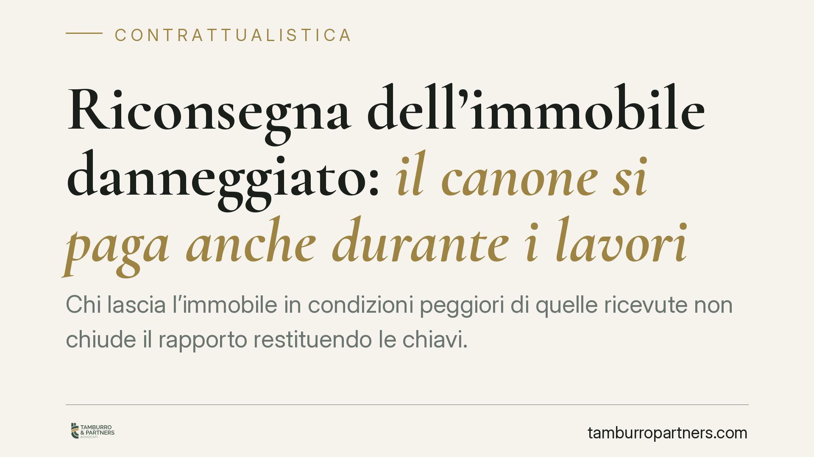
Riconsegna dell'immobile danneggiato: il canone si paga anche durante i lavori
Chi lascia l'immobile in condizioni peggiori di quelle ricevute non chiude il rapporto restituendo le chiavi. La Cassazione ha ribadito che il canone continua a maturare fino al te…
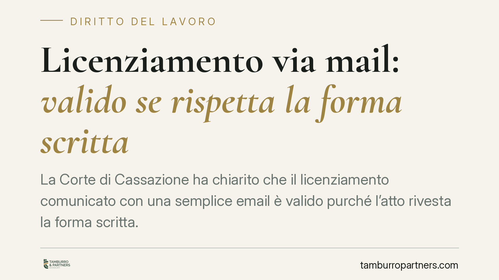
Licenziamento via mail: valido se rispetta la forma scritta
La Corte di Cassazione ha chiarito che il licenziamento comunicato con una semplice email è valido purché l'atto rivesta la forma scritta. Il requisito imposto dalla legge riguarda…
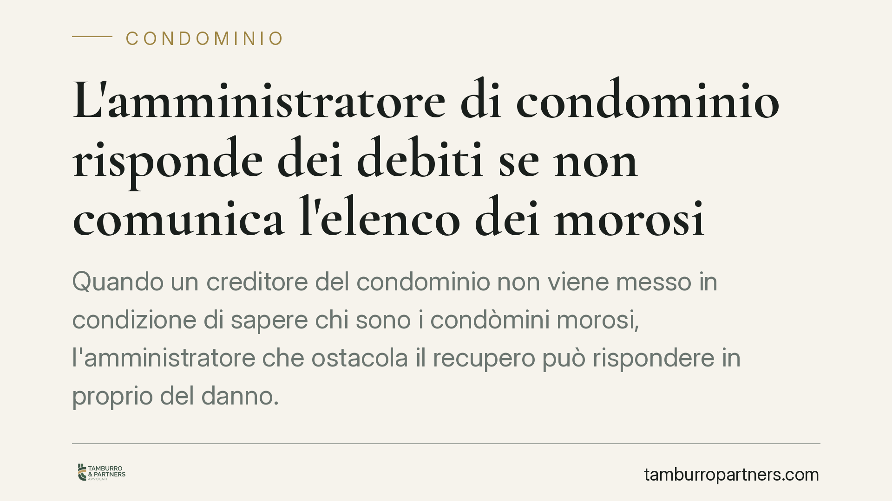
L'amministratore di condominio risponde dei debiti se non comunica l'elenco dei morosi
Quando un creditore del condominio non viene messo in condizione di sapere chi sono i condòmini morosi, l'amministratore che ostacola il recupero può rispondere in proprio del dann…
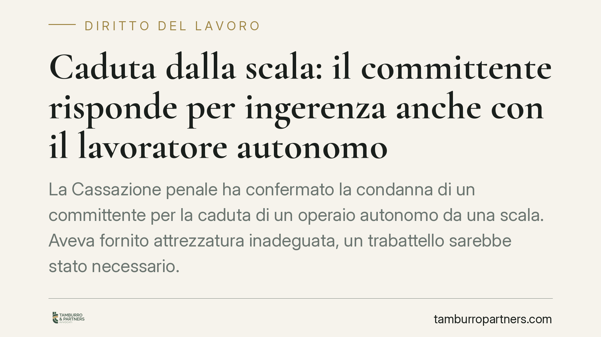
Caduta dalla scala: il committente risponde per ingerenza anche con il lavoratore autonomo
La Cassazione penale ha confermato la condanna di un committente per la caduta di un operaio autonomo da una scala. Aveva fornito attrezzatura inadeguata, un trabattello sarebbe st…
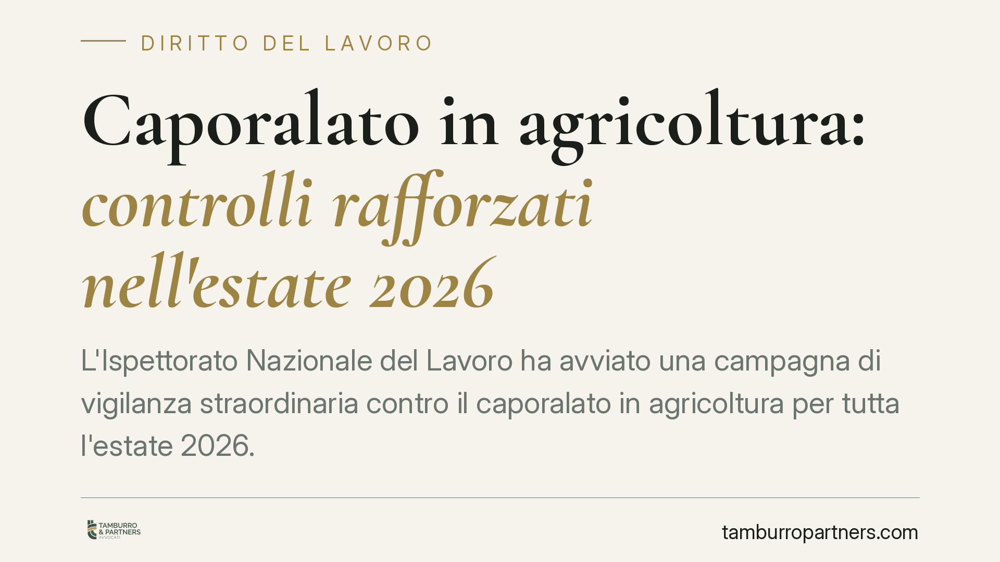
Caporalato in agricoltura: controlli rafforzati nell'estate 2026
L'Ispettorato Nazionale del Lavoro ha avviato una campagna di vigilanza straordinaria contro il caporalato in agricoltura per tutta l'estate 2026. I controlli interessano l'intero …

Privazione di incarichi e isolamento sul lavoro: quando è mobbing
L'isolamento sistematico e la privazione di incarichi possono integrare mobbing e fondare il risarcimento del danno. Ma la giurisprudenza di legittimità richiede un elemento decisi…

Leasing senza piano di ammortamento: la determinatezza delle condizioni economiche
La Cassazione torna sul leasing e fissa un punto netto: senza il piano di ammortamento allegato al contratto, le condizioni economiche rischiano l'indeterminatezza. In gioco gli ar…

Verande in condominio: quando la delibera unanime vale come contratto
Una delibera assembleare votata all'unanimità può autorizzare interventi su beni di proprietà privata, come una veranda. Lo conferma la Corte d'Appello di Catanzaro con la sentenza…

Invecchiamento attivo: la Legge 33/2023 e il ruolo del Terzo Settore
Auser ha portato al Governo una richiesta precisa: investire in modo strutturale su prevenzione, partecipazione e welfare di prossimità per la popolazione anziana. Al centro c'è la…

IA nel rapporto di lavoro: cosa cambia con i decreti attuativi
Il Consiglio dei Ministri ha approvato in via preliminare i decreti attuativi sull'uso dell'intelligenza artificiale nel lavoro. Il principio guida è chiaro: l'IA supporta il dator…

Calo di mansioni e mobbing: quando la riduzione delle mansioni è illecita
Vedersi alleggerire i compiti non significa automaticamente subire mobbing. La Cassazione, con la sentenza n. 5472 del 2021, ha ribadito che la riduzione delle mansioni può rientra…

Intelligenza artificiale e licenziamenti: perché serve sempre una decisione umana
Lo schema di decreti attuativi della legge 132/2025, approvato dal Consiglio dei ministri, conferma un principio già radicato nel diritto europeo: una decisione che incide sul rapp…